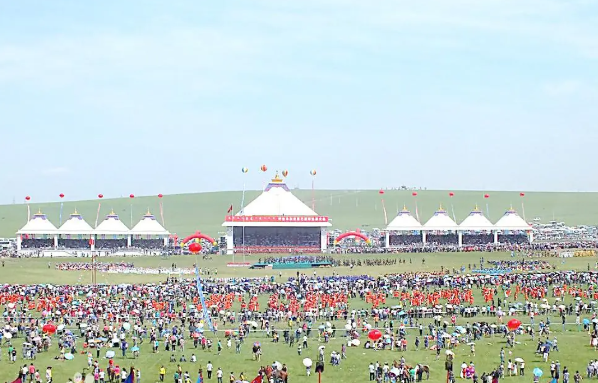
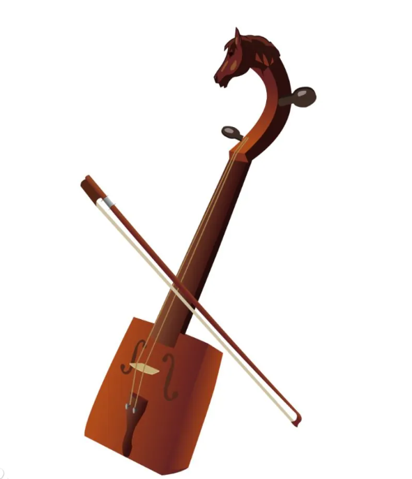
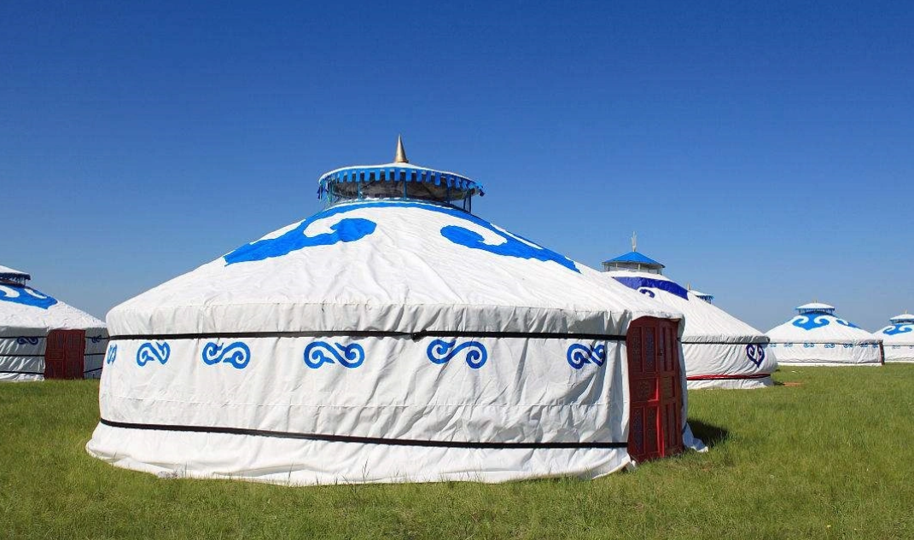
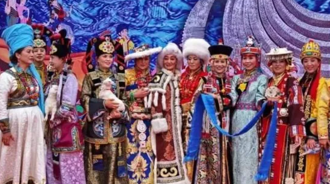
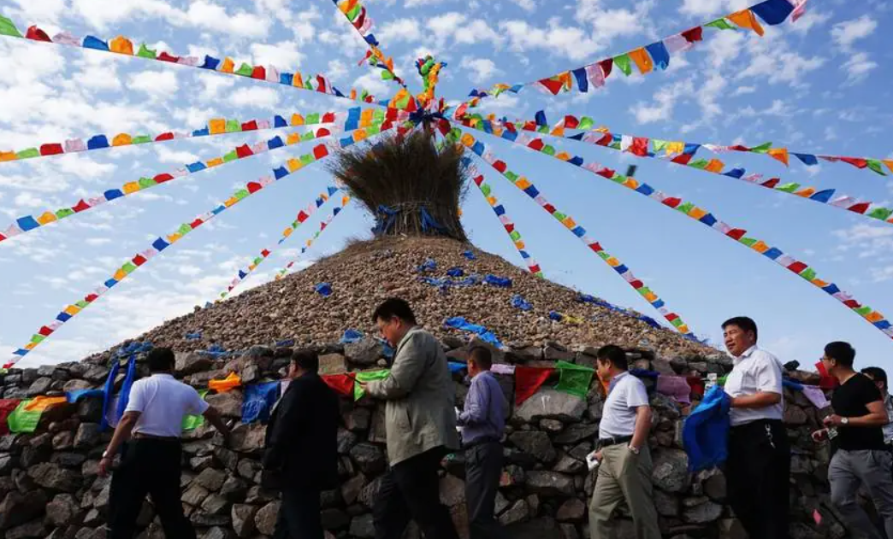
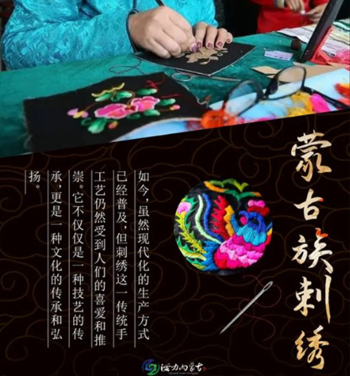

赤峰文旅
🕐 最佳季节：6-10月
🌡️ 夏季均温：20°C
🧥 早晚温差大备外套
📸 日出日落最出片

"那达慕"在蒙古语中意为"娱乐、游戏"，是蒙古族历史最悠久、规模最盛大的传统节日。每年七八月间，辽阔的草原上骏马奔腾、力士角力、箭矢如风。核心竞技"男儿三艺"——赛马展示了人马合一的默契与速度、摔跤（搏克）体现了草原力士的勇武与技巧、射箭考验了骑手的沉着与精准。那达慕已有八百余年历史，2006年被列入国家级非物质文化遗产。如今的那达慕不仅是体育盛会，更是集歌舞表演、美食品鉴、商贸交流于一体的草原文化盛宴。

马头琴是蒙古族最具代表性的传统拉弦乐器，因琴杆上端雕刻精美的马头而得名。琴身用优质木材制作，琴弦和琴弓均用马尾制成。音色深沉悠扬、如泣如诉，低音区浑厚如草原的风声、高音区明亮如骏马的嘶鸣。民间流传着这样一个动人传说：牧人为了纪念心爱的白马，用马骨、马皮和马尾制作了世界上第一把马头琴。2006年马头琴音乐被列入国家级非物质文化遗产，2009年蒙古族马头琴艺术被联合国教科文组织列入人类非物质文化遗产代表作名录。

蒙古包是蒙古族牧民世代居住的传统移动式住所，由木质骨架和毛毡覆盖而成。圆形结构具有极佳的抗风能力——草原上狂风大作时，蒙古包纹丝不动；内部空气流通设计使冬暖夏凉。一顶蒙古包可在数小时内完成搭建或拆卸，完美适应了游牧生活的需要。包内布局有严格规范：正中央为火炉，正北供奉神位，西侧为男主人区域，东侧为女主人和厨房区域。蒙古包不仅是居住空间，更是蒙古族宇宙观的体现——圆形的天窗象征天空、圆形的包体象征大地。2008年蒙古包营造技艺被列入国家级非物质文化遗产。

蒙古族服饰以长袍、腰带、皮靴和头饰为核心，构成了独具特色的服饰体系。长袍宽大舒适，便于骑马和劳作；腰带既是装饰又兼具实用功能；皮靴耐磨防寒，适应草原环境。女子头饰尤为华丽精美，多用金、银、珊瑚、松石、玛瑙等珍贵材料精工制作，一顶完整的头饰可重达数公斤，是家族财富和地位的象征。2008年蒙古族服饰被列入国家级非物质文化遗产名录。在重要节庆和婚礼上，盛装的蒙古族男女宛如草原上流动的艺术品，展现了这一古老民族的审美与技艺巅峰。

敖包是草原上用石块和柳枝垒砌的圆形塔形建筑，通常建在山顶或高地之上，是蒙古族祭祀天地山川、祈求风调雨顺的圣地。每年春秋两季，牧民们身着盛装从四面八方赶来，在敖包前献上洁白的哈达、新鲜的奶食和美酒，顺时针绕行敖包三周，同时向天空抛洒牛奶和酒，口中念诵祝祷词，表达对自然万物的敬畏和对美好生活的祈愿。祭敖包仪式源于古老的萨满教自然崇拜，后与藏传佛教融合，至今仍是草原上最庄严神圣的仪式。2006年，祭敖包被列入国家级非物质文化遗产名录。

蒙古族刺绣以色彩鲜艳、针法粗犷而富于变化著称。多用金银线和彩色丝线，在服饰、靴帽、荷包、马鞍垫等物品上绣出花草纹、云纹、盘肠纹、犄纹等富有民族特色的吉祥图案。蒙古族妇女从小学习刺绣，一针一线之间倾注了对生活的热爱和对家人的祝福。刺绣图案中蕴含着丰富的文化密码——云纹象征吉祥如意、盘肠纹寓意连绵不断、犄纹代表五畜兴旺。2008年蒙古族刺绣被列入国家级非物质文化遗产名录。如今这一古老技艺在传承中不断创新，成为蒙古族文化走向世界的一张精美名片。